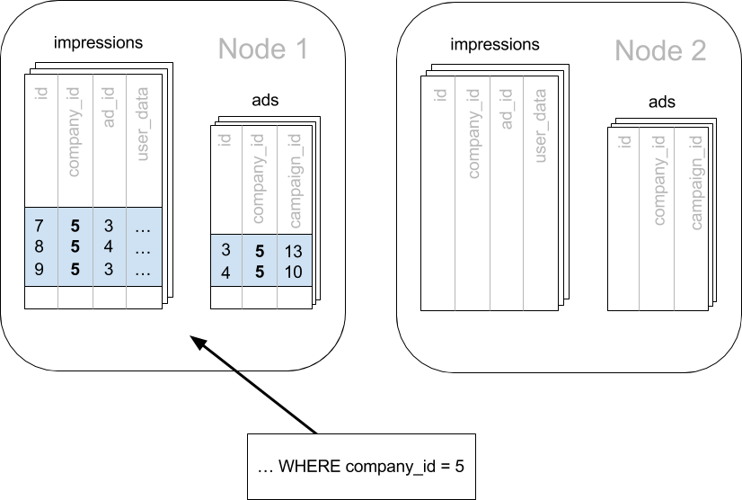

Multi-tenant Applications
Contents
Estimated read time: 30 minutes
If you’re building a Software-as-a-service (SaaS) application, you probably already have the notion of tenancy built into your data model. Typically, most information relates to tenants / customers / accounts and the database tables capture this natural relation.
For SaaS applications, each tenant’s data can be stored together in a single database instance and kept isolated from and invisible to other tenants. This is efficient in three ways. First, application improvements apply to all clients. Second, sharing a database between tenants uses hardware efficiently. Last, it is much simpler to manage a single database for all tenants than a different database server for each tenant.
However, a single relational database instance has traditionally had trouble scaling to the volume of data needed for a large multi-tenant application. Developers were forced to relinquish the benefits of the relational model when data exceeded the capacity of a single database node.
Canopy allows users to write multi-tenant applications as if they are connecting to a single LightDB database, when in fact the database is a horizontally scalable cluster of machines. Client code requires minimal modifications and can continue to use full SQL capabilities.
This guide takes a sample multi-tenant application and describes how to model it for scalability with Canopy. Along the way we examine typical challenges for multi-tenant applications like isolating tenants from noisy neighbors, scaling hardware to accommodate more data, and storing data that differs across tenants. LightDB and Canopy provide all the tools needed to handle these challenges, so let’s get building.
Let’s Make an App – Ad Analytics
We’ll build the back-end for an application that tracks online advertising performance and provides an analytics dashboard on top. It’s a natural fit for a multi-tenant application because user requests for data concern one company (their own) at a time. Code for the full example application is available on Github.
Let’s start by considering a simplified schema for this application. The application must keep track of multiple companies, each of which runs advertising campaigns. Campaigns have many ads, and each ad has associated records of its clicks and impressions.
Here is the example schema. We’ll make some minor changes later, which allow us to effectively distribute and isolate the data in a distributed environment.
CREATE TABLE companies (
id bigserial PRIMARY KEY,
name text NOT NULL,
image_url text,
created_at timestamp without time zone NOT NULL,
updated_at timestamp without time zone NOT NULL
);
CREATE TABLE campaigns (
id bigserial PRIMARY KEY,
company_id bigint REFERENCES companies (id),
name text NOT NULL,
cost_model text NOT NULL,
state text NOT NULL,
monthly_budget bigint,
blacklisted_site_urls text[],
created_at timestamp without time zone NOT NULL,
updated_at timestamp without time zone NOT NULL
);
CREATE TABLE ads (
id bigserial PRIMARY KEY,
campaign_id bigint REFERENCES campaigns (id),
name text NOT NULL,
image_url text,
target_url text,
impressions_count bigint DEFAULT 0,
clicks_count bigint DEFAULT 0,
created_at timestamp without time zone NOT NULL,
updated_at timestamp without time zone NOT NULL
);
CREATE TABLE clicks (
id bigserial PRIMARY KEY,
ad_id bigint REFERENCES ads (id),
clicked_at timestamp without time zone NOT NULL,
site_url text NOT NULL,
cost_per_click_usd numeric(20,10),
user_ip inet NOT NULL,
user_data jsonb NOT NULL
);
CREATE TABLE impressions (
id bigserial PRIMARY KEY,
ad_id bigint REFERENCES ads (id),
seen_at timestamp without time zone NOT NULL,
site_url text NOT NULL,
cost_per_impression_usd numeric(20,10),
user_ip inet NOT NULL,
user_data jsonb NOT NULL
);
There are modifications we can make to the schema which will give it a performance boost in a distributed environment like Canopy. To see how, we must become familiar with how Canopy distributes data and executes queries.
Scaling the Relational Data Model
The relational data model is great for applications. It protects data integrity, allows flexible queries, and accommodates changing data. Traditionally the only problem was that relational databases weren’t considered capable of scaling to the workloads needed for big SaaS applications. Developers had to put up with NoSQL databases – or a collection of backend services – to reach that size.
With Canopy you can keep your data model and make it scale. Canopy appears to applications as a single LightDB database, but it internally routes queries to an adjustable number of physical servers (nodes) which can process requests in parallel.
Multi-tenant applications have a nice property that we can take advantage of: queries usually always request information for one tenant at a time, not a mix of tenants. For instance, when a salesperson is searching prospect information in a CRM, the search results are specific to his employer; other businesses’ leads and notes are not included.
Because application queries are restricted to a single tenant, such as a store or company, one approach for making multi-tenant application queries fast is to store all data for a given tenant on the same node. This minimizes network overhead between the nodes and allows Canopy to support all your application’s joins, key constraints and transactions efficiently. With this, you can scale across multiple nodes without having to totally re-write or re-architect your application.
We do this in Canopy by making sure every table in our schema has a column to clearly mark which tenant owns which rows. In the ad analytics application the tenants are companies, so we must ensure all tables have a company_id column.
We can tell Canopy to use this column to read and write rows to the same node when the rows are marked for the same company. In Canopy’ terminology company_id will be the distribution column, which you can learn more about in Distributed Data Modeling.
Preparing Tables and Ingesting Data
In the previous section we identified the correct distribution column for our multi-tenant application: the company id. Even in a single-machine database it can be useful to denormalize tables with the addition of company id, whether it be for row-level security or for additional indexing. The extra benefit, as we saw, is that including the extra column helps for multi-machine scaling as well.
The schema we have created so far uses a separate id column as primary key for each table. Canopy requires that primary and foreign key constraints include the distribution column. This requirement makes enforcing these constraints much more efficient in a distributed environment as only a single node has to be checked to guarantee them.
In SQL, this requirement translates to making primary and foreign keys composite by including company_id. This is compatible with the multi-tenant case because what we really need there is to ensure uniqueness on a per-tenant basis.
Putting it all together, here are the changes which prepare the tables for distribution by company_id.
CREATE TABLE companies (
id bigserial PRIMARY KEY,
name text NOT NULL,
image_url text,
created_at timestamp without time zone NOT NULL,
updated_at timestamp without time zone NOT NULL
);
CREATE TABLE campaigns (
id bigserial, -- was: PRIMARY KEY
company_id bigint REFERENCES companies (id),
name text NOT NULL,
cost_model text NOT NULL,
state text NOT NULL,
monthly_budget bigint,
blacklisted_site_urls text[],
created_at timestamp without time zone NOT NULL,
updated_at timestamp without time zone NOT NULL,
PRIMARY KEY (company_id, id) -- added
);
CREATE TABLE ads (
id bigserial, -- was: PRIMARY KEY
company_id bigint, -- added
campaign_id bigint, -- was: REFERENCES campaigns (id)
name text NOT NULL,
image_url text,
target_url text,
impressions_count bigint DEFAULT 0,
clicks_count bigint DEFAULT 0,
created_at timestamp without time zone NOT NULL,
updated_at timestamp without time zone NOT NULL,
PRIMARY KEY (company_id, id), -- added
FOREIGN KEY (company_id, campaign_id) -- added
REFERENCES campaigns (company_id, id)
);
CREATE TABLE clicks (
id bigserial, -- was: PRIMARY KEY
company_id bigint, -- added
ad_id bigint, -- was: REFERENCES ads (id),
clicked_at timestamp without time zone NOT NULL,
site_url text NOT NULL,
cost_per_click_usd numeric(20,10),
user_ip inet NOT NULL,
user_data jsonb NOT NULL,
PRIMARY KEY (company_id, id), -- added
FOREIGN KEY (company_id, ad_id) -- added
REFERENCES ads (company_id, id)
);
CREATE TABLE impressions (
id bigserial, -- was: PRIMARY KEY
company_id bigint, -- added
ad_id bigint, -- was: REFERENCES ads (id),
seen_at timestamp without time zone NOT NULL,
site_url text NOT NULL,
cost_per_impression_usd numeric(20,10),
user_ip inet NOT NULL,
user_data jsonb NOT NULL,
PRIMARY KEY (company_id, id), -- added
FOREIGN KEY (company_id, ad_id) -- added
REFERENCES ads (company_id, id)
);
You can learn more about migrating your own data model in multi-tenant schema migration.
Try it Yourself
Note
This guide is designed so you can follow along in your own Canopy database. This tutorial assumes that you already have Canopy installed and running. If you don’t have Canopy running, you can setup Canopy locally using one of the options from Single-Node Canopy.
You’ll run the SQL commands using ltsql and connect to the Coordinator node:
Docker:
docker exec -it citus_master ltsql -U lightdb
At this point feel free to follow along in your own Canopy cluster by downloading and executing the SQL to create the schema. Once the schema is ready, we can tell Canopy to create shards on the workers. From the coordinator node, run:
SELECT create_distributed_table('companies', 'id');
SELECT create_distributed_table('campaigns', 'company_id');
SELECT create_distributed_table('ads', 'company_id');
SELECT create_distributed_table('clicks', 'company_id');
SELECT create_distributed_table('impressions', 'company_id');
The create_distributed_table function informs Canopy that a table should be distributed among nodes and that future incoming queries to those tables should be planned for distributed execution. The function also creates shards for the table on worker nodes, which are low-level units of data storage Canopy uses to assign data to nodes.
The next step is loading sample data into the cluster from the command line.
# download and ingest datasets from the shell
for dataset in companies campaigns ads clicks impressions geo_ips; do
curl -O https://examples.citusdata.com/mt_ref_arch/${dataset}.csv
done
Note
If you are using Docker, you should use the docker cp command to copy the files into the Docker container.
for dataset in companies campaigns ads clicks impressions geo_ips; do
docker cp ${dataset}.csv citus:.
done
Being an extension of LightDB, Canopy supports bulk loading with the COPY command. Use it to ingest the data you downloaded, and make sure that you specify the correct file path if you downloaded the file to some other location. Back inside ltsql run this:
\copy companies from 'companies.csv' with csv
\copy campaigns from 'campaigns.csv' with csv
\copy ads from 'ads.csv' with csv
\copy clicks from 'clicks.csv' with csv
\copy impressions from 'impressions.csv' with csv
Integrating Applications
Here’s the good news: once you have made the slight schema modification outlined earlier, your application can scale with very little work. You’ll just connect the app to Canopy and let the database take care of keeping the queries fast and the data safe.
Any application queries or update statements which include a filter on company_id will continue to work exactly as they are. As mentioned earlier, this kind of filter is common in multi-tenant apps. When using an Object-Relational Mapper (ORM) you can recognize these queries by methods such as where or filter.
ActiveRecord:
Impression.where(company_id: 5).count
Django:
Impression.objects.filter(company_id=5).count()
Basically when the resulting SQL executed in the database contains a WHERE company_id = :value clause on every table (including tables in JOIN queries), then Canopy will recognize that the query should be routed to a single node and execute it there as it is. This makes sure that all SQL functionality is available. The node is an ordinary LightDB server after all.
Also, to make it even simpler, you can use our activerecord-multi-tenant library for Rails, or django-multitenant for Django which will automatically add these filters to all your queries, even the complicated ones. Check out our migration guides for Ruby on Rails and Django.
This guide is framework-agnostic, so we’ll point out some Canopy features using SQL. Use your imagination for how these statements would be expressed in your language of choice.
Here is a simple query and update operating on a single tenant.
-- campaigns with highest budget
SELECT name, cost_model, state, monthly_budget
FROM campaigns
WHERE company_id = 5
ORDER BY monthly_budget DESC
LIMIT 10;
-- double the budgets!
UPDATE campaigns
SET monthly_budget = monthly_budget*2
WHERE company_id = 5;
A common pain point for users scaling applications with NoSQL databases is the lack of transactions and joins. However, transactions work as you’d expect them to in Canopy:
-- transactionally reallocate campaign budget money
BEGIN;
UPDATE campaigns
SET monthly_budget = monthly_budget + 1000
WHERE company_id = 5
AND id = 40;
UPDATE campaigns
SET monthly_budget = monthly_budget - 1000
WHERE company_id = 5
AND id = 41;
COMMIT;
As a final demo of SQL support, we have a query which includes aggregates and window functions and it works the same in Canopy as it does in LightDB. The query ranks the ads in each campaign by the count of their impressions.
SELECT a.campaign_id,
RANK() OVER (
PARTITION BY a.campaign_id
ORDER BY a.campaign_id, count(*) desc
), count(*) as n_impressions, a.id
FROM ads as a
JOIN impressions as i
ON i.company_id = a.company_id
AND i.ad_id = a.id
WHERE a.company_id = 5
GROUP BY a.campaign_id, a.id
ORDER BY a.campaign_id, n_impressions desc;
In short when queries are scoped to a tenant then inserts, updates, deletes, complex SQL, and transactions all work as expected.
Sharing Data Between Tenants
Up until now all tables have been distributed by company_id, but sometimes there is data that can be shared by all tenants, and doesn’t “belong” to any tenant in particular. For instance, all companies using this example ad platform might want to get geographical information for their audience based on IP addresses. In a single machine database this could be accomplished by a lookup table for geo-ip, like the following. (A real table would probably use PostGIS but bear with the simplified example.)
CREATE TABLE geo_ips (
addrs cidr NOT NULL PRIMARY KEY,
latlon point NOT NULL
CHECK (-90 <= latlon[0] AND latlon[0] <= 90 AND
-180 <= latlon[1] AND latlon[1] <= 180)
);
CREATE INDEX ON geo_ips USING gist (addrs inet_ops);
To use this table efficiently in a distributed setup, we need to find a way to co-locate the geo_ips table with clicks for not just one – but every – company. That way, no network traffic need be incurred at query time. We do this in Canopy by designating geo_ips as a reference table.
-- Make synchronized copies of geo_ips on all workers
SELECT create_reference_table('geo_ips');
Reference tables are replicated across all worker nodes, and Canopy automatically keeps them in sync during modifications. Notice that we call create_reference_table rather than create_distributed_table.
Now that geo_ips is established as a reference table, load it with example data:
\copy geo_ips from 'geo_ips.csv' with csv
Now joining clicks with this table can execute efficiently. We can ask, for example, the locations of everyone who clicked on ad 290.
SELECT c.id, clicked_at, latlon
FROM geo_ips, clicks c
WHERE addrs >> c.user_ip
AND c.company_id = 5
AND c.ad_id = 290;
Online Changes to the Schema
Another challenge with multi-tenant systems is keeping the schemas for all the tenants in sync. Any schema change needs to be consistently reflected across all the tenants. In Canopy, you can simply use standard LightDB DDL commands to change the schema of your tables, and Canopy will propagate them from the coordinator node to the workers using a two-phase commit protocol.
For example, the advertisements in this application could use a text caption. We can add a column to the table by issuing the standard SQL on the coordinator:
ALTER TABLE ads
ADD COLUMN caption text;
This updates all the workers as well. Once this command finishes, the Canopy cluster will accept queries that read or write data in the new caption column.
For a fuller explanation of how DDL commands propagate through the cluster, see Modifying Tables.
When Data Differs Across Tenants
Given that all tenants share a common schema and hardware infrastructure, how can we accommodate tenants which want to store information not needed by others? For example, one of the tenant applications using our advertising database may want to store tracking cookie information with clicks, whereas another tenant may care about browser agents. Traditionally databases using a shared schema approach for multi-tenancy have resorted to creating a fixed number of pre-allocated “custom” columns, or having external “extension tables.” However, LightDB provides a much easier way with its unstructured column types, notably JSONB.
Notice that our schema already has a JSONB field in clicks called user_data. Each tenant can use it for flexible storage.
Suppose company five includes information in the field to track whether the user is on a mobile device. The company can query to find who clicks more, mobile or traditional visitors:
SELECT
user_data->>'is_mobile' AS is_mobile,
count(*) AS count
FROM clicks
WHERE company_id = 5
GROUP BY user_data->>'is_mobile'
ORDER BY count DESC;
The database administrator can even create a partial index to improve speed for an individual tenant’s query patterns. Here is one to improve company 5’s filters for clicks from users on mobile devices:
CREATE INDEX click_user_data_is_mobile
ON clicks ((user_data->>'is_mobile'))
WHERE company_id = 5;
Additionally, LightDB supports GIN indices on JSONB. Creating a GIN index on a JSONB column will create an index on every key and value within that JSON document. This speeds up a number of JSONB operators such as ?, ?|, and ?&.
CREATE INDEX click_user_data
ON clicks USING gin (user_data);
-- this speeds up queries like, "which clicks have
-- the is_mobile key present in user_data?"
SELECT id
FROM clicks
WHERE user_data ? 'is_mobile'
AND company_id = 5;
Scaling Hardware Resources
Multi-tenant databases should be designed for future scale as business grows or tenants want to store more data. Canopy can scale out easily by adding new machines without having to make any changes or take application downtime.
Being able to rebalance data in the Canopy cluster allows you to grow your data size or number of customers and improve performance on demand. Adding new machines allows you to keep data in memory even when it is much larger than what a single machine can store.
To scale out your Canopy cluster, first add a new worker node to it. Alternatively, if you run your own Canopy installation, you can add nodes manually with the canopy_add_node UDF.
Once you add the node it will be available in the system. However, at this point no tenants are stored on it and Canopy will not yet run any queries there. To move your existing data, you can ask Canopy to rebalance the data. This operation moves bundles of rows called shards between the currently active nodes to attempt to equalize the amount of data on each node.
SELECT rebalance_table_shards('companies');
Rebalancing preserves Table Co-Location, which means we can tell Canopy to rebalance the companies table and it will take the hint and rebalance the other tables which are distributed by company_id. Also, with Canopy Enterprise Edition, applications do not need to undergo downtime during shard rebalancing. Read requests continue seamlessly, and writes are locked only when they affect shards which are currently in flight. In Canopy Community edition, writes to shards are blocked during rebalancing but reads are unaffected.
Where to Go From Here
With this, you now know how to use Canopy to power your multi-tenant application for scalability. If you have an existing schema and want to migrate it for Canopy, see Multi-Tenant Transitioning.
To adjust a front-end application, specifically Ruby on Rails or Django, read Ruby on Rails or Django.